Boards support agile project management methodologies, such as Scrum or Kanban.
Our Agile boards can be for anything you would like to keep track of within your projects: Tasks to be done, Bugs to be fixed, Things to be reviewed, Features to be developed, Risks to be monitored, Ideas to be spread, anything! The boards consist of lists (columns) and cards. You can choose between a Basic board and various Action boards.
| Topic | Content |
|---|---|
| Create new Boards | How to create a new Agile board. |
| Choose between board types | What is the difference between the available board types? |
| Give the board a title | How to name a board. |
| Add lists to your board | How to add lists to a board. |
| Remove lists | How to remove lists from a board. |
| Add cards to a list | How to add cards to a list in a board. |
| Update cards | How to update cards. |
| Remove cards | How to remove cards. |
| Manage boards | How to manage permissions for boards. |
The new Boards are tightly integrated with all other project management functionalities in IESP PM TOOL, i.e. work packages or Gantt charts. This makes it so easy and practical to include the Boards in your daily project management routines and to gain a much quicker overview of important topics in your project.
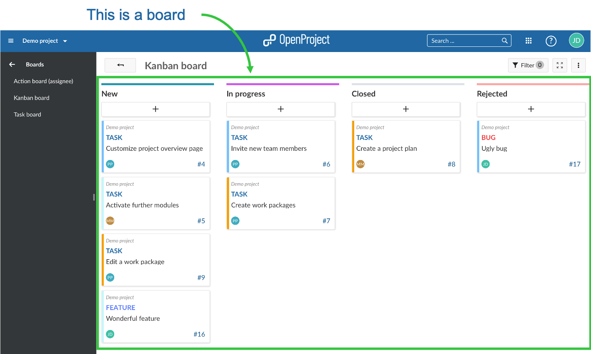
You can create as many Agile boards in a project as you need and configure them to your needs. First, you need to create a new Boards view.
If you haven’t done so yet, activate the Boards module within your project. Also, we recommend to verify Roles and Permissions within your system’s Administration.
Click on the green +Board button to create a new Board view.
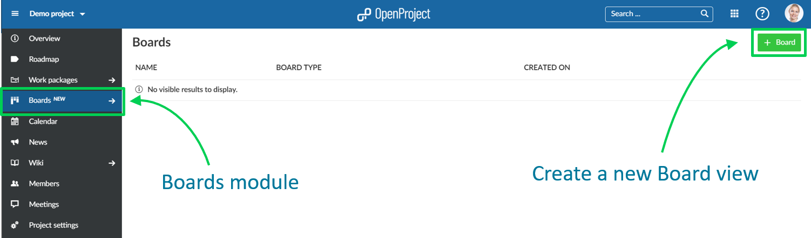
Next, you need to choose which kind of Agile board you want to create.
You can freely create lists, name them and order your work packages within. If you move work packages between the lists, there will be NO changes to the work package itself. This allows you to create flexible boards for any kind of activity you would like to track, e.g. Management of Ideas.
In an Action board each lists represents a value of an attribute of the contained work packages (cards), e.g. there’s a list for the status “New” and a list for the status “In Progress” in the Status board. Moving work packages (cards) between two lists will update them automatically, based on the list to which they’re moved. After adding lists to your board they will automatically be filled with the respective work packages.
There are several types of Action boards available:
Status board: Each list represents a status. That means that e.g. all work packages with the status “New” will be automatically displayed in the column “New”. When creating a new Status board a list with all work packages in the default status (usually this is the status “New”) will be added automatically, while additional lists need to be added manually. Please note: You can’t move work packages from or to every status. Please find out more about the work-flow logics restricting this here: Allowed transitions between status
Assignee board: Every list represents one assignee. You can choose regular users, placeholder users and groups as assignees.
Version board: Every list represents a version. This board is ideal for product development or planning software releases. When creating a new Version board a list with all work packages in the version(s) belonging to the current project will be added automatically, while additional lists need to be added manually.
Subproject board: Every list represents a subproject. Within the list you will find the subproject’s work packages.
Parent-Child board: Every list represents a parent work package. Within the list you will find the work package’s children. Only work packages from the current project can be selected as a list, i.e. can be chosen as the name of the list. The Parent-Child board is ideal for depicting a work breakdown structure. Please note: This will only display one hierarchy level below the displayed work package, i.e. only immediate children and no grandchildren.
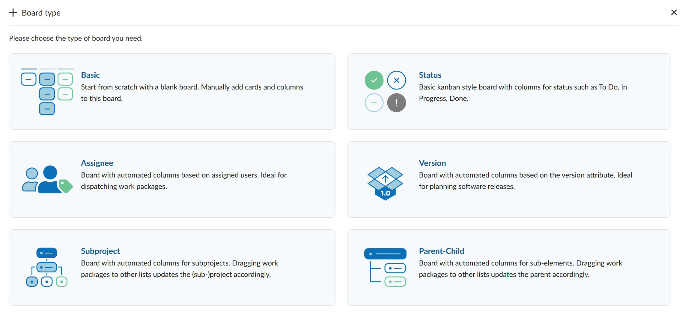
Choose a meaningful title for your Board so that it is clear, e.g. for other team members, what you want to do.
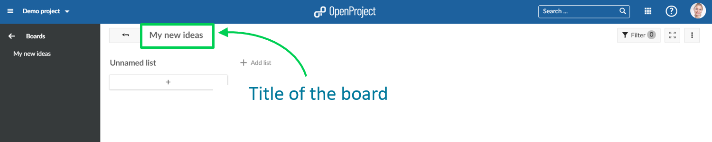
Lists usually represent a status workflow, assignees, a version or anything that you would like to track within your project. You can add as many lists that you need to a Board.
Action boards lists: The available lists depend on the type of board you choose. Remember: if you change a card between the lists, the respective attribute (e.g. status) will be updated automatically. Basic board lists: You can create any kind of list and name them to your needs. Remember: No updates to the attributes will happen when moving cards between the lists.
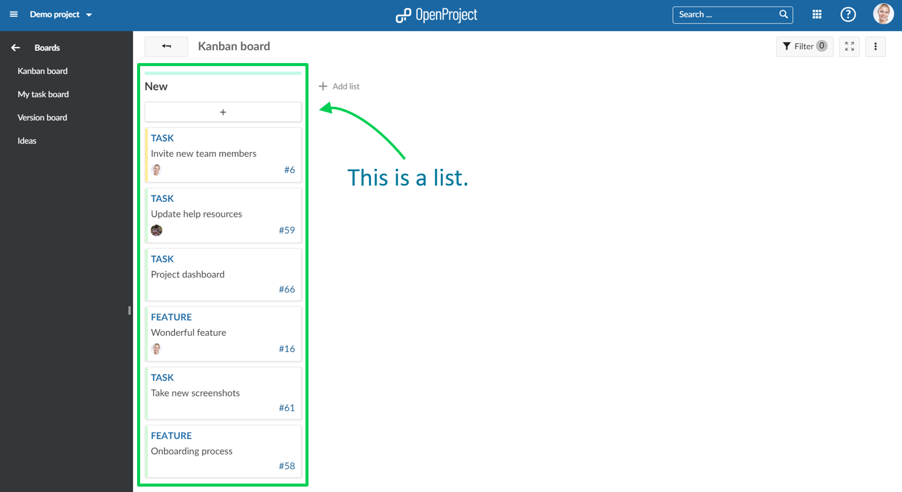
Click + add list to add lists to your board.
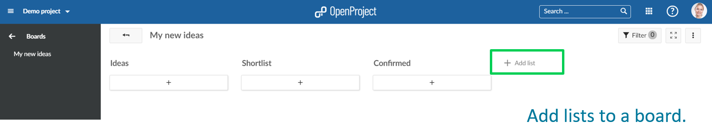
Basic board lists: Give the list any meaningful name. Action board lists: The list’s name will depend on the type of Action board you chose, e.g. “New”, “In Progress”, etc. for the Status board.
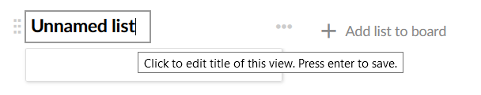
To remove lists, click on the three dots next to a list’s title, and select Delete list.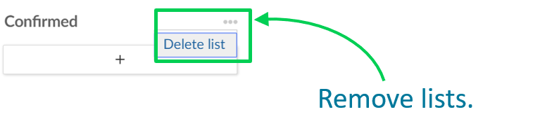
You can add cards to a list. Cards represent a work package in IESP PM TOOL. They can be any kind of work within a project, e.g. a Task, a Bug, a Feature, a Risk, anything.
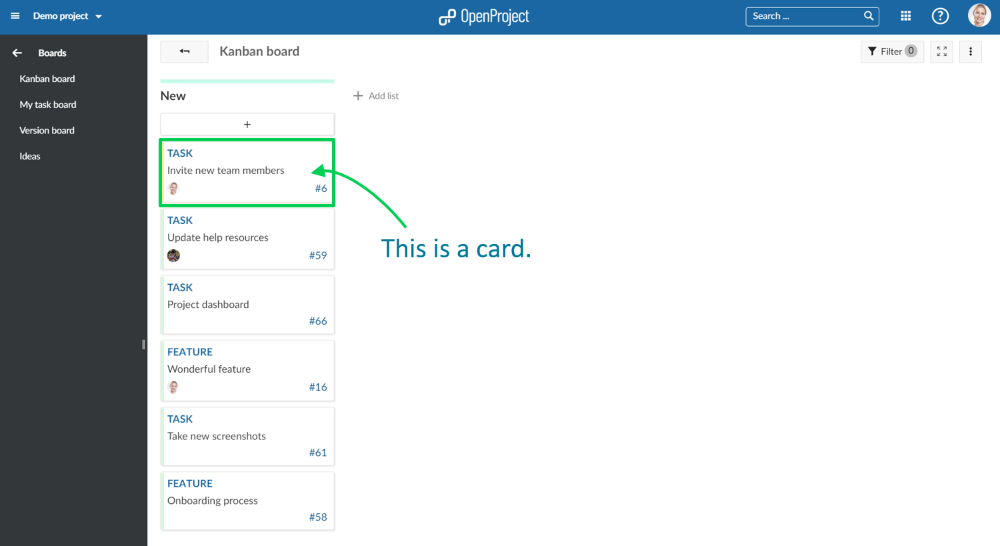
Click + under the lists’ title to add a card: create a new card or choose an existing work package and add it as a card to your list.
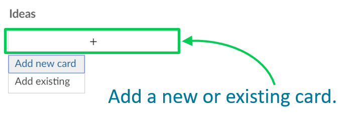
Add new card: enter a title and press Enter. Add existing: enter an existing title or an ID and press Enter.
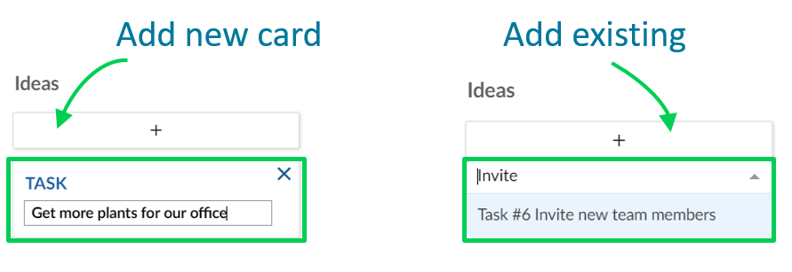
You can update cards in the following ways:
Move cards with drag and drop within a list or to a new list. Remember: Moving cards to another list in an Action board will update their attributes, e.g. status.
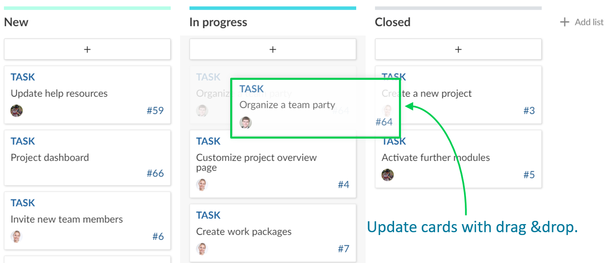
Apart from the Status board you can update a work package’s status directly in the card.
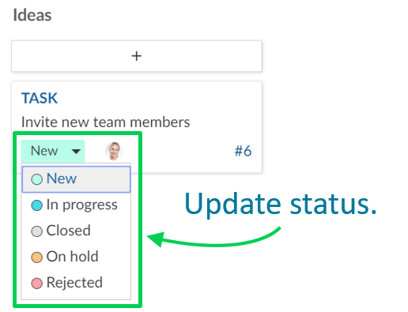
A double click on a card will open the work package’s fullscreen view. The arrow on top will bring you back to the boards view. 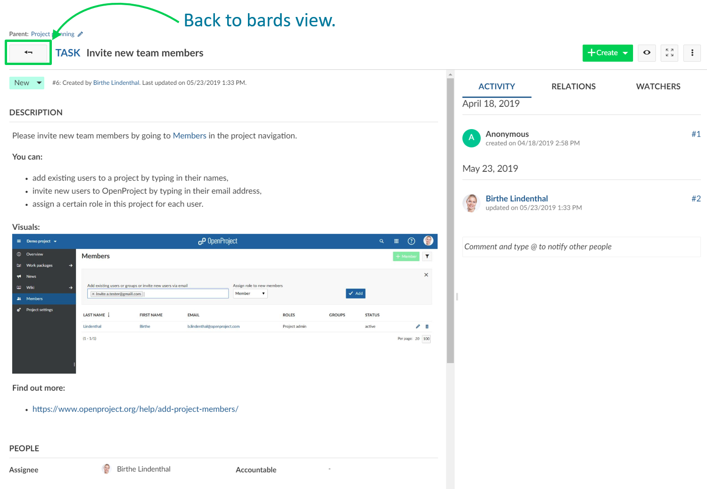
Clicking on Open details view (the blue “i”) will open the work package’s split screen view. You can close it by clicking on the “x” in its upper right corner.
To remove a card from a Basic board hover over the card and press the X.
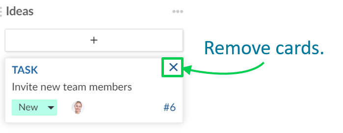
Cards from Actions boards will be removed automatically from a list as soon as the respective attribute (e.g. Status) is changed.
To create new boards, open existing boards, or delete boards, navigate to the main Boards menu item.
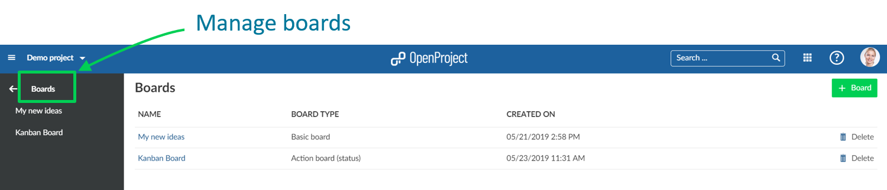
Verify and update roles and permissions for boards in the system’s Administration if necessary.
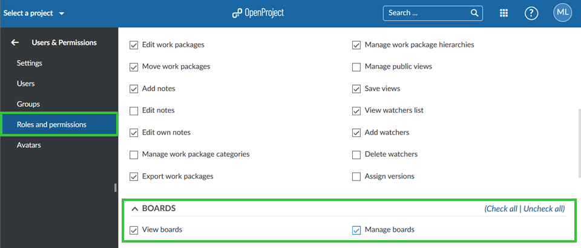
We would like to show you some examples so that you get an idea on how to use Agile boards. Also, once you have set up your custom boards, you can easily copy them along with your (whole) project to use them as a basis for new ones. Please note: The subprojects in the Subproject board won’t be copied.
Freely create any kind of list you need to organize your team in IESP PM TOOL. If it is organizing tasks for a department, planning a team event, collecting feedback for different topics, coordinating tasks in different locations, generating ideas and many more. Every team member can add tasks to this board and thus the board will be growing over time. It allows you to always know what tasks need to be done without using an Excel file and one coordinator. Everyone has access to the information at any time from anywhere.
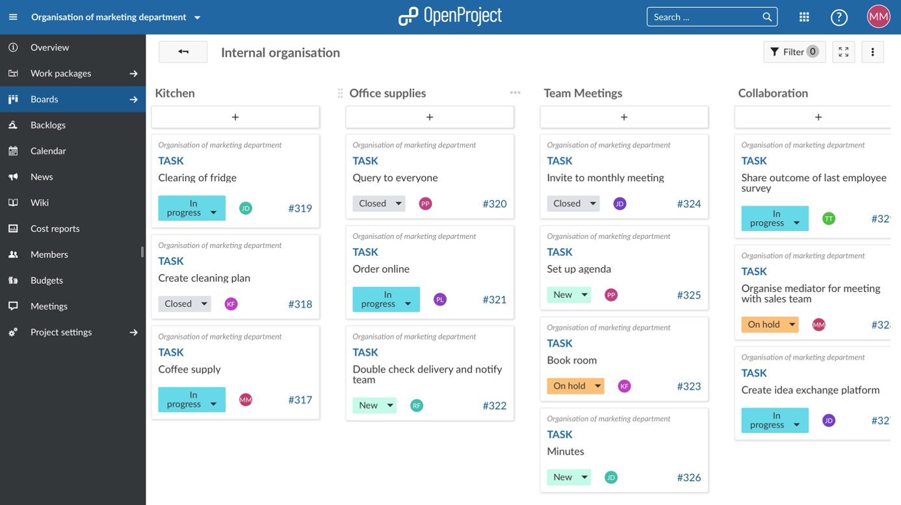
Status board
The Status Action board is probably the most used Agile board. Start with the three basic status “new”, “in progress” and “closed” and see what status you might need according to your way of working. With a status action board, you can implement the KANBAN principle, continuously improving the flow of work. If you would for example like to map your order process in a board, you can use the status board to pass the tickets through the status. From an incoming order (new), to when it is being handled (in progress) to when it is done (closed). Accompanying work packages to the actual order process would also be shown in this board to give a good overview, e.g. adding a new payment option. Different people from different departments can work together and are up to date on where every work package stands without having to ask.
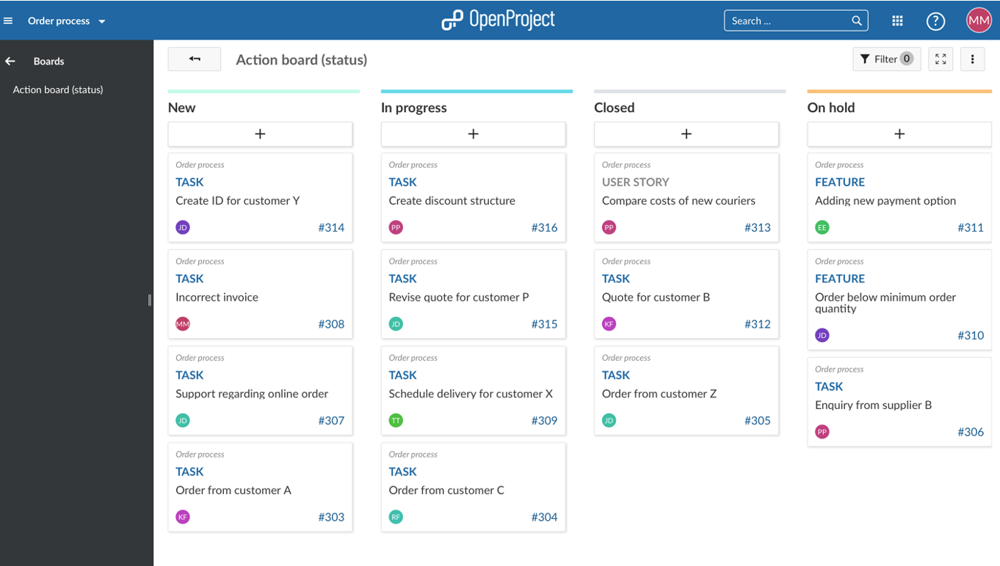
Assignee board
Know who is working on what. If a cross-functional team is e.g. developing a product together, you would like to know who is working on what and if everything is on track. The assignee board gives you the opportunity to get an overview of responsibilities, how busy the teams are and if all tasks are distributed. It gives the teams clear responsibilities. The marketing team knows that the finance team is doing the product calculation but they have to check the overall product profitability themselves. Of course you don’t need to use groups as assignees, you can also use individual team members in the list.
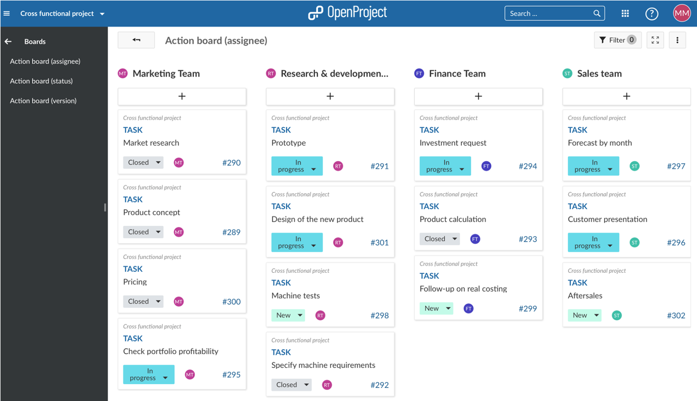
Version board
The Version board facilitates the planning of a product development in several iterations. With every iteration you can add and improve features and let your product become the best version for your customers. If a certain feature is e.g. too complex to be developed in one specific version because you have other features to develop with higher priority, just drag it to the next version and it will update automatically. This board gives you a perfect overview of what is coming and you can see at a glance if it fits your priorities. If not, adjust with drag and drop.
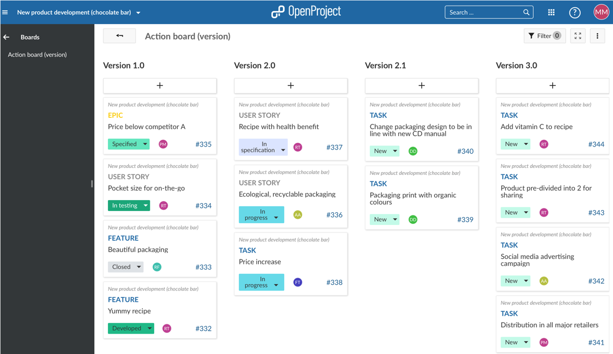
The Boards module is a premium feature of IESP PM TOOL Enterprise on-premises and IESP PM TOOL Enterprise cloud. You can upgrade your Community Edition installation by entering a valid subscription token in the application administration. You can purchase the token on our website. In addition, you need to activate the Boards module in the project settings.
This message appears when the Backlogs module is activated and you try to set a work package belonging to project A as a child of another work package belonging to project B. In the Backlogs module work packages can only have children of the same version and the same project. To avoid displaying different information in the backlog and in the boards view this restriction is in place. You can solve it by disabling the Backlogs module or by changing the project (and if necessary version) of the work package you’d like to move.